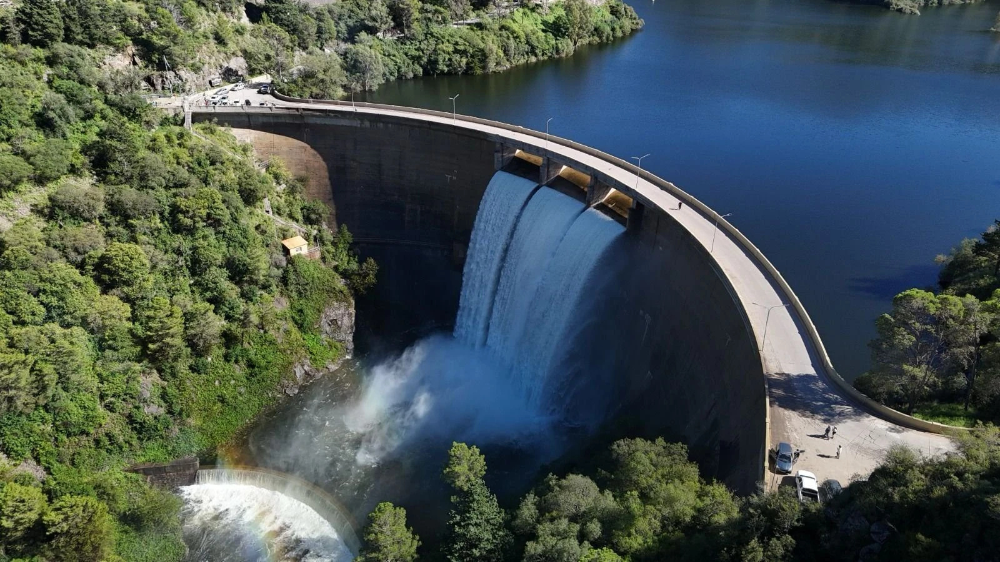

Pick the source
32 entries across reservoirs, aquifers, glaciers and desalination. The ticker you pick is
written into the ERC-20 itself, readable by anyone as source().
Hydropad · meme coins paired to real water
Launch a meme coin and pair it to a named body of water: a reservoir, an alpine lake, a river, a working reserve. The pairing is written into the token itself and read back on chain, the curve lives in one open contract, and the fee on every trade accrues to a vault only you can withdraw.
A pairing is a name, not a deed. It conveys no ownership of the water, no legal claim on it and no physical backing.
How it works
A dam does not make water. It holds back what the catchment sends down and releases it on a schedule, which is why the number everyone watches is a level.

1Live storage 2The crest 3The gates 4The plunge pool 5Stilling basinThe water above the intakes. The only part that can actually be used.
The bottom, below the lowest outlet. In the lake, but out of reach.
Head becomes power, so a low reservoir is worth less per cubic metre.
The relief valve. Running means full, not plentiful.
A level is a balance, not a forecast: what the catchment sends down, minus what is released, minus what the sun takes back. Hydropad writes one reserve's ticker into the token and keeps its published figures beside it. Price comes from the curve alone. The mechanics in full →
| # | Token | Paired with | Stage | Market cap |
|---|
The curve
| # | Source | Spot |
|---|
The sites
The pairing
32 entries across reservoirs, aquifers, glaciers and desalination. The ticker you pick is
written into the ERC-20 itself, readable by anyone as source().
One transaction mints the supply into the launcher and opens the curve. Send value with it and you take the first position in the same call.
A constant product over a virtual reserve: the first buyer pays the opening price and every later buyer pays more. Sells go back through the same curve.
3% of every trade accrues to that token's vault. Only the creator can withdraw it, and only that vault, never anyone's position.